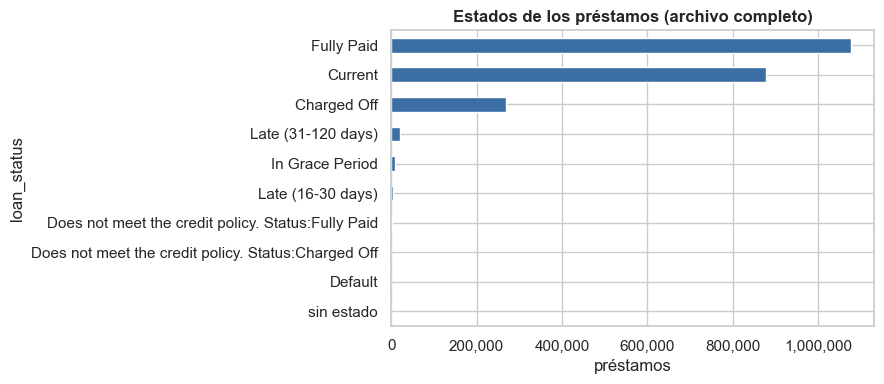
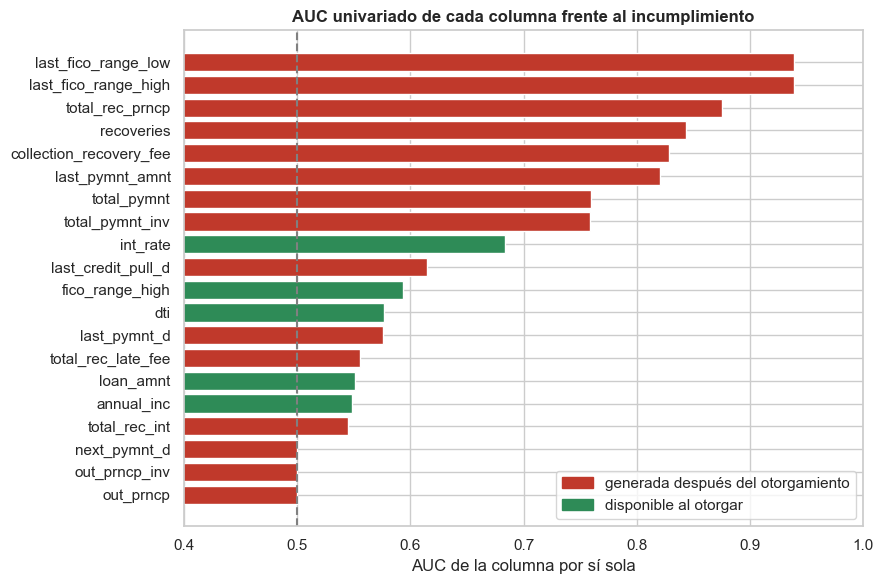
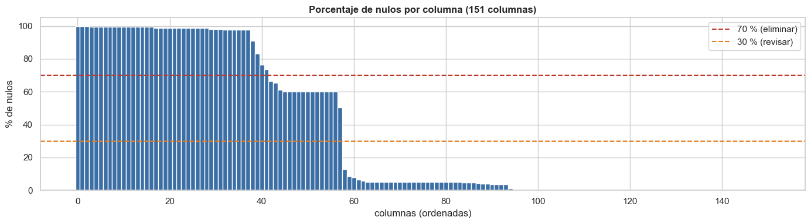
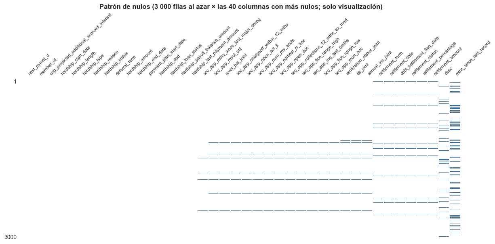
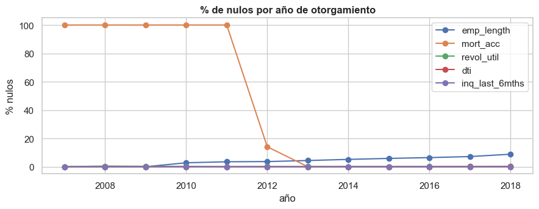
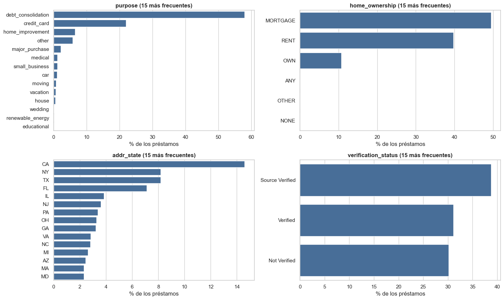
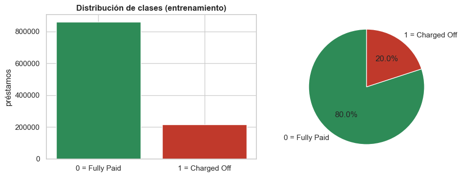
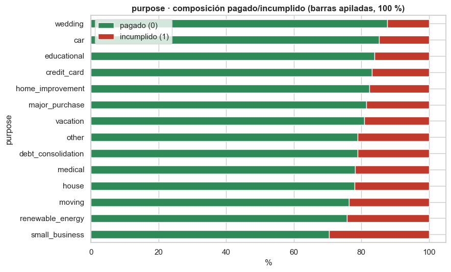
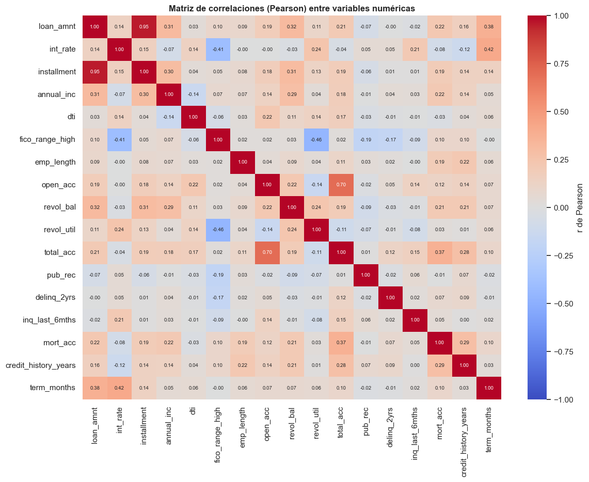
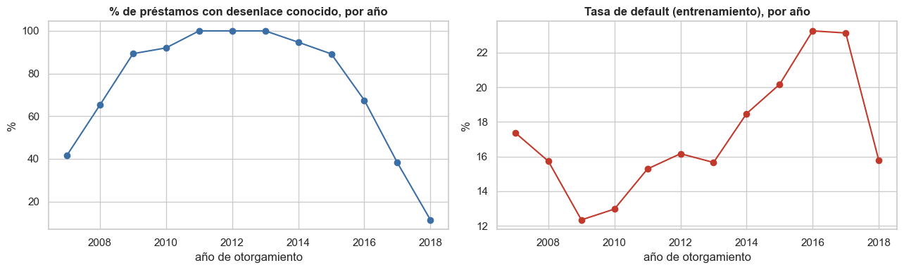

1 · Análisis exploratorio de datos (EDA)#
Objetivo del capítulo. Entender la estructura, la calidad y las relaciones de los datos de Lending Club antes de preprocesar o modelar, y dejar por escrito las decisiones que de ahí se derivan.
Pregunta de investigación. Dado un préstamo en el momento de otorgarlo, ¿cuál es la probabilidad de que termine en incumplimiento (Charged Off)?
Orden del análisis: partición previa a la exploración#
Si se explora el conjunto completo antes de dividirlo, las decisiones que se toman al explorar (qué variables usar, qué umbrales, qué transformaciones) quedan influidas por datos que, en la práctica, todavía no se conocerían. Por eso este capítulo sigue este orden:
Carga y estructura del archivo completo (dimensiones, tipos, columnas): no usan la etiqueta.
Se define la población y se hace la partición 80/20 (estratificada) y se guarda.
Todo análisis que mire la variable objetivo, las distribuciones o las relaciones (auditoría de fuga, faltantes, valores atípicos, correlaciones, pruebas) usa solo el entrenamiento. El 20 % de prueba se aparta y no se examina hasta la evaluación final.
Nota
Se usa el archivo completo (2 260 701 filas × 151 columnas), sin muestreo. Las únicas excepciones son unas pocas visualizaciones costosas (pairplot, violines, matriz de dispersión), donde se dibuja una muestra aleatoria solo para el gráfico, y dos pruebas que se calculan sobre muestras por costo o por validez de la prueba: Shapiro-Wilk (5 000 filas) y el V de Cramér entre pares de variables categóricas (300 000 filas). El resto de estadísticas y pruebas usa todas las filas de entrenamiento.
Orden: (1.1) carga y visión general · (1.2) la variable objetivo · (1.3) partición · (1.4) auditoría de fuga · (1.5) valores faltantes · (1.6) univariado · (1.7) bivariado · (1.8) multicolinealidad · (1.9) visualizaciones avanzadas · (1.10) sesgo temporal · (1.11) resumen ejecutivo.
Mostrar el código
import gc
import platform
import sys
import time
import warnings
from pathlib import Path
import matplotlib.pyplot as plt
import missingno as msno
import numpy as np
import pandas as pd
import psutil
import seaborn as sns
from IPython.display import display
from scipy import stats
from sklearn.metrics import roc_auc_score
sys.path.insert(0, str(Path.cwd().parent))
from src import lc_utils as lc # noqa: E402
warnings.filterwarnings("ignore", category=FutureWarning)
warnings.filterwarnings("ignore", message="The figure layout has changed to tight")
pd.set_option("display.width", 200)
pd.set_option("display.max_columns", 40)
pd.set_option("display.float_format", lambda v: f"{v:,.3f}")
sns.set_theme(style="whitegrid", context="notebook")
plt.rcParams.update({"figure.dpi": 100, "axes.titleweight": "bold"})
RESULTS, DATA_DIR = Path("../resultados"), Path("../data")
RESULTS.mkdir(exist_ok=True)
DATA_DIR.mkdir(exist_ok=True)
proc = psutil.Process()
print(f"Python {platform.python_version()} · pandas {pd.__version__} · numpy {np.__version__} "
f"· RAM total {psutil.virtual_memory().total / 1e9:.1f} GB")
Python 3.10.21 · pandas 2.1.0 · numpy 1.25.2 · RAM total 16.9 GB
1.1 Carga inicial y visión general#
Se carga el CSV completo con pandas (sin nrows, sample ni filtros de filas). En el
capítulo de PySpark se mide el mismo proceso con Spark para comparar tiempos de carga.
Mostrar el código
t0 = time.time()
df = pd.read_csv(lc.DATA_PATH, low_memory=False)
T_CARGA_PANDAS = time.time() - t0
print(f"Carga con pandas: {T_CARGA_PANDAS:.1f} s | memoria del proceso: {proc.memory_info().rss / 1e9:.2f} GB")
print(f"Dimensión del dataset: {df.shape[0]:,} filas × {df.shape[1]} columnas")
n_filas_archivo, n_cols_archivo = df.shape
Carga con pandas: 121.5 s | memoria del proceso: 3.26 GB
Dimensión del dataset: 2,260,701 filas × 151 columnas
Mostrar el código
cols_vista = ["id", "loan_amnt", "term", "int_rate", "grade", "emp_length", "home_ownership",
"annual_inc", "purpose", "dti", "fico_range_high", "loan_status"]
print("Primeras filas (head):")
display(df[cols_vista].head())
print("Últimas filas (tail):")
display(df[cols_vista].tail())
Primeras filas (head):
| id | loan_amnt | term | int_rate | grade | emp_length | home_ownership | annual_inc | purpose | dti | fico_range_high | loan_status | |
|---|---|---|---|---|---|---|---|---|---|---|---|---|
| 0 | 68407277 | 3,600.000 | 36 months | 13.990 | C | 10+ years | MORTGAGE | 55,000.000 | debt_consolidation | 5.910 | 679.000 | Fully Paid |
| 1 | 68355089 | 24,700.000 | 36 months | 11.990 | C | 10+ years | MORTGAGE | 65,000.000 | small_business | 16.060 | 719.000 | Fully Paid |
| 2 | 68341763 | 20,000.000 | 60 months | 10.780 | B | 10+ years | MORTGAGE | 63,000.000 | home_improvement | 10.780 | 699.000 | Fully Paid |
| 3 | 66310712 | 35,000.000 | 60 months | 14.850 | C | 10+ years | MORTGAGE | 110,000.000 | debt_consolidation | 17.060 | 789.000 | Current |
| 4 | 68476807 | 10,400.000 | 60 months | 22.450 | F | 3 years | MORTGAGE | 104,433.000 | major_purchase | 25.370 | 699.000 | Fully Paid |
Últimas filas (tail):
| id | loan_amnt | term | int_rate | grade | emp_length | home_ownership | annual_inc | purpose | dti | fico_range_high | loan_status | |
|---|---|---|---|---|---|---|---|---|---|---|---|---|
| 2260696 | 88985880 | 40,000.000 | 60 months | 10.490 | B | 9 years | MORTGAGE | 227,000.000 | debt_consolidation | 12.750 | 709.000 | Current |
| 2260697 | 88224441 | 24,000.000 | 60 months | 14.490 | C | 6 years | RENT | 110,000.000 | debt_consolidation | 18.300 | 664.000 | Charged Off |
| 2260698 | 88215728 | 14,000.000 | 60 months | 14.490 | C | 10+ years | MORTGAGE | 95,000.000 | debt_consolidation | 23.360 | 664.000 | Current |
| 2260699 | Total amount funded in policy code 1: 1465324575 | NaN | NaN | NaN | NaN | NaN | NaN | NaN | NaN | NaN | NaN | NaN |
| 2260700 | Total amount funded in policy code 2: 521953170 | NaN | NaN | NaN | NaN | NaN | NaN | NaN | NaN | NaN | NaN | NaN |
Observación. Las dos últimas filas del archivo no son préstamos: en id traen el texto
«Total amount funded in policy code 1/2: …», es decir, totales que Lending Club agregó al final.
Por eso el archivo trae 33 filas con loan_status vacío (las 2 de totales y otras 31 sin
información). Estas filas se descartan al definir la población; el problema solo se advierte al inspeccionar el final del archivo.
Mostrar el código
print("info() resumido:")
df.info(verbose=False, memory_usage="deep")
tipos = df.dtypes.value_counts().rename("columnas").to_frame()
tipos.index = tipos.index.astype(str)
display(tipos)
info() resumido:
<class 'pandas.core.frame.DataFrame'>
RangeIndex: 2260701 entries, 0 to 2260700
Columns: 151 entries, id to settlement_term
dtypes: float64(113), object(38)
memory usage: 6.3 GB
| columnas | |
|---|---|
| float64 | 113 |
| object | 38 |
Mostrar el código
desc = df.describe(include="number").T
desc.to_csv(RESULTS / "describe_completo.csv")
print(f"describe() de las {len(desc)} columnas numéricas guardado en resultados/describe_completo.csv")
display(desc.loc[["loan_amnt", "int_rate", "installment", "annual_inc", "dti", "fico_range_high",
"open_acc", "revol_bal", "revol_util", "total_acc"]])
describe() de las 113 columnas numéricas guardado en resultados/describe_completo.csv
| count | mean | std | min | 25% | 50% | 75% | max | |
|---|---|---|---|---|---|---|---|---|
| loan_amnt | 2,260,668.000 | 15,046.931 | 9,190.245 | 500.000 | 8,000.000 | 12,900.000 | 20,000.000 | 40,000.000 |
| int_rate | 2,260,668.000 | 13.093 | 4.832 | 5.310 | 9.490 | 12.620 | 15.990 | 30.990 |
| installment | 2,260,668.000 | 445.807 | 267.174 | 4.930 | 251.650 | 377.990 | 593.320 | 1,719.830 |
| annual_inc | 2,260,664.000 | 77,992.429 | 112,696.200 | 0.000 | 46,000.000 | 65,000.000 | 93,000.000 | 110,000,000.000 |
| dti | 2,258,957.000 | 18.824 | 14.183 | -1.000 | 11.890 | 17.840 | 24.490 | 999.000 |
| fico_range_high | 2,260,668.000 | 702.588 | 33.011 | 614.000 | 679.000 | 694.000 | 719.000 | 850.000 |
| open_acc | 2,260,639.000 | 11.612 | 5.641 | 0.000 | 8.000 | 11.000 | 14.000 | 101.000 |
| revol_bal | 2,260,668.000 | 16,658.458 | 22,948.305 | 0.000 | 5,950.000 | 11,324.000 | 20,246.000 | 2,904,836.000 |
| revol_util | 2,258,866.000 | 50.338 | 24.713 | 0.000 | 31.500 | 50.300 | 69.400 | 892.300 |
| total_acc | 2,260,639.000 | 24.163 | 11.988 | 1.000 | 15.000 | 22.000 | 31.000 | 176.000 |
Los rangos ya insinúan problemas de calidad que se estudiarán en el entrenamiento:
annual_inc llega a más de 100 millones, dti a 999 y revol_util a cerca de 900 %.
1.2 Variable objetivo y población de estudio#
La variable loan_status toma diez valores (tabla siguiente). La definición más directa de la variable
objetivo sería default = 1 si loan_status es Charged Off y 0 en cualquier otro caso.
Mostrar el código
estados = df["loan_status"].value_counts(dropna=False).rename("préstamos").to_frame()
estados["%"] = 100 * estados["préstamos"] / len(df)
estados = estados.rename(index={np.nan: "sin estado"})
display(estados)
fig, ax = plt.subplots(figsize=(9, 4))
estados["préstamos"].iloc[::-1].plot.barh(ax=ax, color="#3b6ea5")
ax.set(title="Estados de los préstamos (archivo completo)", xlabel="préstamos")
ax.xaxis.set_major_formatter(lambda v, pos: f"{v:,.0f}")
plt.tight_layout()
plt.show()
| préstamos | % | |
|---|---|---|
| loan_status | ||
| Fully Paid | 1076751 | 47.629 |
| Current | 878317 | 38.852 |
| Charged Off | 268559 | 11.879 |
| Late (31-120 days) | 21467 | 0.950 |
| In Grace Period | 8436 | 0.373 |
| Late (16-30 days) | 4349 | 0.192 |
| Does not meet the credit policy. Status:Fully Paid | 1988 | 0.088 |
| Does not meet the credit policy. Status:Charged Off | 761 | 0.034 |
| Default | 40 | 0.002 |
| sin estado | 33 | 0.001 |


Esa definición marcaría como 0 = Fully Paid a todos los préstamos que no son
Charged Off, incluidos 878 317 préstamos Current (siguen pagándose; su desenlace aún no se
conoce), además de 34 252 atrasados o en periodo de gracia y 2 822 filas en otros estados. Etiquetar
como pagados a los vigentes sesgaría la etiqueta (mezclaría «pagó» con «todavía no se sabe») y
reduciría la tasa de incumplimiento aparente del 20.0 % al 11.9 %.
La variable objetivo se define entonces solo para préstamos con desenlace conocido: Fully Paid (0) y
Charged Off (1). La restricción se aplica por igual a todas las filas y no es un muestreo: se lee y
procesa el archivo completo.
Mostrar el código
literal = (df["loan_status"] == "Charged Off").astype(int)
resuelto = df["loan_status"].isin(lc.RESOLVED)
comp = pd.DataFrame({
"filas": [len(df), int(resuelto.sum())],
"default = 1": [int(literal.sum()), int((df.loc[resuelto, "loan_status"] == "Charged Off").sum())],
}, index=["Fórmula literal (todo el archivo)", "Solo desenlace conocido (Fully Paid / Charged Off)"])
comp["tasa de incumplimiento"] = comp["default = 1"] / comp["filas"]
display(comp.style.format({"filas": "{:,.0f}", "default = 1": "{:,.0f}", "tasa de incumplimiento": "{:.2%}"}))
# Conteos por año de otorgamiento (estructura del archivo; se usan en la sección 1.10)
anio_todos = pd.to_numeric(df["issue_d"].str[-4:], errors="coerce").dropna().astype(int).value_counts().sort_index()
anio_resueltos = pd.to_numeric(df.loc[resuelto, "issue_d"].str[-4:], errors="coerce").dropna().astype(int).value_counts().sort_index()
| filas | default = 1 | tasa de incumplimiento | |
|---|---|---|---|
| Fórmula literal (todo el archivo) | 2,260,701 | 268,559 | 11.88% |
| Solo desenlace conocido (Fully Paid / Charged Off) | 1,345,310 | 268,559 | 19.96% |
La tasa real de incumplimiento entre préstamos con desenlace conocido es ≈ 20 %; la definición directa la subestima (≈ 12 %) porque cuenta los préstamos aún vigentes como si fueran buenos.
1.3 Partición entrenamiento / prueba (antes de explorar)#
Se construye la tabla de modelado (solo desenlace conocido) y se hace ahora la partición 80/20
estratificada (misma proporción de incumplimientos en ambos lados) con semilla fija. La asignación
se guarda una sola vez en data/split_ids.parquet con las columnas id y split (train / test),
más fold (pliegue 0, 1 o 2 de las filas de entrenamiento, también estratificado) y rank (orden aleatorio
fijo, para los experimentos de escala). Todos los capítulos (scikit-learn y PySpark) leen
exactamente este archivo: así se comparan modelos sobre los mismos préstamos (requisito de la prueba de
DeLong) y ambos entornos validan con los mismos 3 pliegues.
A partir de aquí, el conjunto de prueba no se toca: se descarta de la memoria de este cuaderno.
Mostrar el código
m_all = lc.build_model_frame(df[lc.RAW_COLUMNS])
split = lc.make_split(m_all)
split.to_parquet(DATA_DIR / "split_ids.parquet", index=False)
es_test = (split["split"] == "test").to_numpy()
print(f"Población modelada: {len(m_all):,} préstamos · entrenamiento {int((~es_test).sum()):,} "
f"({100 * (~es_test).mean():.0f} %) · prueba {int(es_test.sum()):,} ({100 * es_test.mean():.0f} %)")
print(f"Estratificación: incumplimiento en train {m_all.loc[~es_test, 'default'].mean():.4f} · "
f"en test {m_all.loc[es_test, 'default'].mean():.4f} (deben ser casi idénticos)")
print("Pliegues de validación cruzada (solo entrenamiento):",
split.loc[~es_test, "fold"].value_counts().sort_index().to_dict(),
"· columnas guardadas:", ["id", "split", "fold", "rank"])
# Se conservan SOLO las filas de entrenamiento (tabla de modelado y las 151 columnas originales).
m = m_all.loc[~es_test].reset_index(drop=True)
pos_resueltos = np.flatnonzero(resuelto.to_numpy()) # posiciones en df de los préstamos con desenlace
df_tr = df.iloc[pos_resueltos[~es_test]] # sus filas de entrenamiento, con todas las columnas
n_train, n_test = int((~es_test).sum()), int(es_test.sum())
del df, m_all, split, literal
gc.collect()
print(f"Memoria del proceso tras separar el test: {proc.memory_info().rss / 1e9:.2f} GB · "
f"de aquí en adelante solo existe el entrenamiento ({len(m):,} filas)")
Población modelada: 1,345,310 préstamos · entrenamiento 1,076,248 (80 %) · prueba 269,062 (20 %)
Estratificación: incumplimiento en train 0.1996 · en test 0.1996 (deben ser casi idénticos)
Pliegues de validación cruzada (solo entrenamiento): {0: 358750, 1: 358749, 2: 358749} · columnas guardadas: ['id', 'split', 'fold', 'rank']
Memoria del proceso tras separar el test: 2.29 GB · de aquí en adelante solo existe el entrenamiento (1,076,248 filas)
1.4 Auditoría de fuga de datos (data leakage)#
Lending Club publica columnas que se generan después de otorgar el préstamo (pagos recibidos,
recuperaciones, último pago…). Un modelo que las use incurriría en fuga de datos: aprendería del
desenlace, y ese modelo jamás podría usarse para decidir a quién prestar. Se mide qué tan
informativas son (AUC de cada columna por separado contra default; 0.5 = nada, 1.0 = perfecta)
para justificar que no se usen.
Nota
int_rate sí está disponible al originar el préstamo, así que no es fuga temporal. Pero la tasa la
fija Lending Club con su propio modelo de riesgo, por lo que resume parcialmente esa evaluación
interna. Los resultados que dependen de int_rate deben leerse como una predicción condicionada a
la tasa ya asignada, no como una evaluación de riesgo desde cero.
Mostrar el código
y_tr = m["default"].to_numpy()
aud = {}
for c in lc.POST_ORIGINATION:
x = lc._year_month(df_tr[c]) if c.endswith("_d") else pd.to_numeric(df_tr[c], errors="coerce")
a = roc_auc_score(y_tr, x.fillna(-1).to_numpy())
aud[c] = max(a, 1 - a)
DISPONIBLES = ["int_rate", "fico_range_high", "dti", "annual_inc", "loan_amnt"] # disponibles al originar
for c in DISPONIBLES:
a = roc_auc_score(y_tr, pd.to_numeric(df_tr[c], errors="coerce").fillna(-1).to_numpy())
aud[c] = max(a, 1 - a)
aud = pd.Series(aud).sort_values()
fig, ax = plt.subplots(figsize=(9, 6))
ax.barh(aud.index, aud.values, color=["#2e8b57" if k in DISPONIBLES else "#c0392b" for k in aud.index])
ax.axvline(0.5, color="gray", ls="--")
ax.set(xlim=(0.4, 1.0), xlabel="AUC de la columna por sí sola",
title="AUC univariado de cada columna frente al incumplimiento")
from matplotlib.patches import Patch # noqa: E402
ax.legend(handles=[Patch(color="#c0392b", label="generada después del otorgamiento"),
Patch(color="#2e8b57", label="disponible al otorgar")], loc="lower right")
plt.tight_layout()
plt.show()
post = aud[[i for i in aud.index if i not in DISPONIBLES]]
AUD_MAX = float(post.max())
disp = aud[DISPONIBLES]
print(f"Mayor AUC individual entre columnas posteriores al préstamo: {post.idxmax()} = {AUD_MAX:.3f}")
print(f"Mayor AUC individual entre las variables disponibles al originar: {disp.idxmax()} = {disp.max():.3f}")
print(f"Columnas posteriores con AUC > 0.7: {int((post > 0.7).sum())} de {len(post)}")


Mayor AUC individual entre columnas posteriores al préstamo: last_fico_range_low = 0.939
Mayor AUC individual entre las variables disponibles al originar: int_rate = 0.684
Columnas posteriores con AUC > 0.7: 8 de 15
Varias columnas generadas después del préstamo separan por sí solas a los
incumplidores mucho mejor que cualquier variable disponible al originar (comparar las barras rojas
con las verdes). Un modelo que las use tendría un AUC casi perfecto y un valor práctico nulo:
no se pueden conocer al decidir a quién prestar. Por eso el modelo usa solo variables conocidas en
el momento de otorgar el préstamo (lista en src/lc_utils.py).
1.5 Valores faltantes#
1.5.1 Panorama de las 151 columnas (filas de entrenamiento)#
Mostrar el código
nulos = pd.DataFrame({"nulos": df_tr.isna().sum(), "%": 100 * df_tr.isna().mean()}).sort_values("%", ascending=False)
nulos.to_csv(RESULTS / "nulos_por_columna.csv")
N_MAS70, N_MAS30 = int((nulos["%"] > 70).sum()), int((nulos["%"] > 30).sum())
print(f"Columnas sin ningún nulo: {(nulos['nulos'] == 0).sum()} · con >70 % nulos: {N_MAS70} · con >30 % nulos: {N_MAS30}")
display(nulos.head(20))
fig, ax = plt.subplots(figsize=(14, 4))
ax.bar(range(len(nulos)), nulos["%"].values, color="#3b6ea5", width=1.0)
ax.axhline(70, color="#c0392b", ls="--", label="70 % (eliminar)")
ax.axhline(30, color="#e67e22", ls="--", label="30 % (revisar)")
ax.set(xlabel="columnas (ordenadas)", ylabel="% de nulos", title="Porcentaje de nulos por columna (151 columnas)")
ax.legend()
plt.tight_layout()
plt.show()
Columnas sin ningún nulo: 47 · con >70 % nulos: 42 · con >30 % nulos: 58
| nulos | % | |
|---|---|---|
| next_pymnt_d | 1076248 | 100.000 |
| member_id | 1076248 | 100.000 |
| orig_projected_additional_accrued_interest | 1073233 | 99.720 |
| hardship_start_date | 1071605 | 99.569 |
| hardship_length | 1071605 | 99.569 |
| hardship_type | 1071605 | 99.569 |
| hardship_reason | 1071605 | 99.569 |
| hardship_status | 1071605 | 99.569 |
| deferral_term | 1071605 | 99.569 |
| hardship_amount | 1071605 | 99.569 |
| hardship_end_date | 1071605 | 99.569 |
| payment_plan_start_date | 1071605 | 99.569 |
| hardship_dpd | 1071605 | 99.569 |
| hardship_loan_status | 1071605 | 99.569 |
| hardship_payoff_balance_amount | 1071605 | 99.569 |
| hardship_last_payment_amount | 1071605 | 99.569 |
| sec_app_mths_since_last_major_derog | 1070928 | 99.506 |
| sec_app_revol_util | 1061514 | 98.631 |
| revol_bal_joint | 1061260 | 98.607 |
| sec_app_chargeoff_within_12_mths | 1061259 | 98.607 |


Mostrar el código
top40 = nulos.head(40).index.tolist()
muestra = df_tr[top40].sample(3000, random_state=lc.SEED) # solo para dibujar el patrón
msno.matrix(muestra, figsize=(14, 5), sparkline=False, fontsize=8, color=(0.23, 0.43, 0.65))
plt.title("Patrón de nulos (3 000 filas al azar × las 40 columnas con más nulos; solo visualización)")
plt.show()
prefijos = pd.Series([("hardship" if "hardship" in c else "settlement" if "settlement" in c else
"joint / co-solicitante" if ("joint" in c or c.startswith("sec_app")) else "otras")
for c in nulos[nulos["%"] > 70].index]).value_counts().rename("columnas con >70 % de nulos")
display(prefijos.to_frame())


| columnas con >70 % de nulos | |
|---|---|
| joint / co-solicitante | 16 |
| hardship | 11 |
| otras | 9 |
| settlement | 6 |
Los nulos no están repartidos al azar: se concentran en bloques de columnas que se vacían juntas (la tabla anterior agrupa las de más de 70 %: hardship, settlement, préstamos conjuntos / co-solicitantes…). Es un patrón sistemático (depende del tipo de préstamo o de qué empezó a registrar Lending Club y cuándo), no aleatorio.
1.5.2 Plan de tratamiento (regla por columna)#
Porcentaje de nulos |
Tratamiento |
|---|---|
> 70 % |
Eliminar la columna (casi todas son posteriores al préstamo o de subpoblaciones) |
30 % – 70 % |
Se excluyen del modelo, salvo justificación explícita (tabla siguiente) |
< 30 % (variables del modelo) |
Numéricas: valor centinela −1 (los árboles lo aíslan como «sin dato»); categóricas: categoría |
El análisis de las variables que sí entran al modelo se presenta en la sección 1.5.3. La tabla siguiente documenta cada columna de la franja 30–70 %, agrupada por el motivo real de su nulidad en vez de una única regla genérica.
Mostrar el código
banda = nulos[(nulos["%"] > 30) & (nulos["%"] <= 70)].copy()
anio_col = pd.to_numeric(df_tr["issue_d"].str[-4:], errors="coerce")
early, late = anio_col <= 2012, anio_col >= 2016
banda["% nulos (préstamos ≤ 2012)"] = [100 * df_tr.loc[early, c].isna().mean() for c in banda.index]
banda["% nulos (préstamos ≥ 2016)"] = [100 * df_tr.loc[late, c].isna().mean() for c in banda.index]
banda["justificación"] = "nulidad estructural: Lending Club empezó a registrar esta variable en años recientes"
banda.loc["mths_since_last_delinq", "justificación"] = (
"disponible al otorgar el préstamo; el nulo indica ausencia de morosidad registrada, no falta al azar")
banda.loc["mths_since_recent_revol_delinq", "justificación"] = (
"disponible al otorgar el préstamo; el nulo indica ausencia de morosidad revolvente registrada, no falta al azar")
banda["decisión"] = "excluida (posible mejora: indicador de nulo)"
display(banda[["%", "% nulos (préstamos ≤ 2012)", "% nulos (préstamos ≥ 2016)", "decisión", "justificación"]]
.rename(columns={"%": "% nulos (train)"}).style.format(
{"% nulos (train)": "{:.1f}", "% nulos (préstamos ≤ 2012)": "{:.1f}", "% nulos (préstamos ≥ 2016)": "{:.1f}"}))
| % nulos (train) | % nulos (préstamos ≤ 2012) | % nulos (préstamos ≥ 2016) | decisión | justificación | |
|---|---|---|---|---|---|
| mths_since_recent_revol_delinq | 66.5 | 85.1 | 65.5 | excluida (posible mejora: indicador de nulo) | disponible al otorgar el préstamo; el nulo indica ausencia de morosidad revolvente registrada, no falta al azar |
| il_util | 65.4 | 100.0 | 13.5 | excluida (posible mejora: indicador de nulo) | nulidad estructural: Lending Club empezó a registrar esta variable en años recientes |
| mths_since_rcnt_il | 61.1 | 100.0 | 2.6 | excluida (posible mejora: indicador de nulo) | nulidad estructural: Lending Club empezó a registrar esta variable en años recientes |
| all_util | 60.0 | 100.0 | 0.0 | excluida (posible mejora: indicador de nulo) | nulidad estructural: Lending Club empezó a registrar esta variable en años recientes |
| total_cu_tl | 60.0 | 100.0 | 0.0 | excluida (posible mejora: indicador de nulo) | nulidad estructural: Lending Club empezó a registrar esta variable en años recientes |
| inq_last_12m | 60.0 | 100.0 | 0.0 | excluida (posible mejora: indicador de nulo) | nulidad estructural: Lending Club empezó a registrar esta variable en años recientes |
| open_acc_6m | 60.0 | 100.0 | 0.0 | excluida (posible mejora: indicador de nulo) | nulidad estructural: Lending Club empezó a registrar esta variable en años recientes |
| max_bal_bc | 60.0 | 100.0 | 0.0 | excluida (posible mejora: indicador de nulo) | nulidad estructural: Lending Club empezó a registrar esta variable en años recientes |
| open_rv_12m | 60.0 | 100.0 | 0.0 | excluida (posible mejora: indicador de nulo) | nulidad estructural: Lending Club empezó a registrar esta variable en años recientes |
| total_bal_il | 60.0 | 100.0 | 0.0 | excluida (posible mejora: indicador de nulo) | nulidad estructural: Lending Club empezó a registrar esta variable en años recientes |
| open_il_24m | 60.0 | 100.0 | 0.0 | excluida (posible mejora: indicador de nulo) | nulidad estructural: Lending Club empezó a registrar esta variable en años recientes |
| open_il_12m | 60.0 | 100.0 | 0.0 | excluida (posible mejora: indicador de nulo) | nulidad estructural: Lending Club empezó a registrar esta variable en años recientes |
| open_act_il | 60.0 | 100.0 | 0.0 | excluida (posible mejora: indicador de nulo) | nulidad estructural: Lending Club empezó a registrar esta variable en años recientes |
| open_rv_24m | 60.0 | 100.0 | 0.0 | excluida (posible mejora: indicador de nulo) | nulidad estructural: Lending Club empezó a registrar esta variable en años recientes |
| inq_fi | 60.0 | 100.0 | 0.0 | excluida (posible mejora: indicador de nulo) | nulidad estructural: Lending Club empezó a registrar esta variable en años recientes |
| mths_since_last_delinq | 50.4 | 61.4 | 49.0 | excluida (posible mejora: indicador de nulo) | disponible al otorgar el préstamo; el nulo indica ausencia de morosidad registrada, no falta al azar |
Mostrar el código
# Se conservan solo columnas auxiliares (alineadas con `m`) para justificar descartes por redundancia.
extra = df_tr[["fico_range_low", "funded_amnt", "grade", "sub_grade"]].reset_index(drop=True)
assert len(extra) == len(m)
del df_tr
gc.collect()
print(f"Memoria del proceso ahora: {proc.memory_info().rss / 1e9:.2f} GB · tabla de modelado (train): {m.shape[0]:,} × {m.shape[1]}")
Memoria del proceso ahora: 1.69 GB · tabla de modelado (train): 1,076,248 × 24
1.5.3 Faltantes en las variables del modelo#
Mostrar el código
nm = m[lc.FEATURES].isna().sum().rename("nulos").to_frame()
nm["%"] = 100 * nm["nulos"] / len(m)
nm = nm[nm["nulos"] > 0].sort_values("%", ascending=False)
display(nm)
# ¿Se relacionan los nulos con el objetivo? (si sí, no son "completamente al azar", MCAR)
filas = []
for c in nm.index:
falta = m[c].isna()
n_falta = int(falta.sum())
chi2, p, _, _ = stats.chi2_contingency(pd.crosstab(falta, m["default"]), correction=False)
filas.append({"variable": c, "n con nulo": n_falta,
"tasa default si falta": m.loc[falta, "default"].mean() if n_falta >= 10 else np.nan,
"tasa default si no falta": m.loc[~falta, "default"].mean(),
"diferencia": (m.loc[falta, "default"].mean() - m.loc[~falta, "default"].mean()) if n_falta >= 10 else np.nan,
"chi² p-valor": p if n_falta >= 10 else np.nan})
mcar = pd.DataFrame(filas).set_index("variable")
print("Con menos de 10 filas con nulo, la tasa de default y el χ² no son fiables y se dejan en blanco "
f"({', '.join(mcar.index[mcar['n con nulo'] < 10])}).")
display(mcar)
nulos_anio = pd.DataFrame({c: m.groupby("issue_year")[c].apply(lambda s: 100 * s.isna().mean()) for c in nm.index})
display(nulos_anio.loc[[a for a in (2007, 2009, 2011, 2012, 2013, 2015, 2018) if a in nulos_anio.index]]
.rename_axis("año").style.format("{:.1f} %"))
fig, ax = plt.subplots(figsize=(9, 3.6))
for c in nm.index:
nulos_anio[c].plot(ax=ax, label=c, marker="o")
ax.set(title="% de nulos por año de otorgamiento", ylabel="% nulos", xlabel="año")
ax.legend()
plt.tight_layout()
plt.show()
| nulos | % | |
|---|---|---|
| emp_length | 62826 | 5.838 |
| mort_acc | 37953 | 3.526 |
| revol_util | 695 | 0.065 |
| dti | 296 | 0.028 |
| inq_last_6mths | 1 | 0.000 |
Con menos de 10 filas con nulo, la tasa de default y el χ² no son fiables y se dejan en blanco (inq_last_6mths).
| n con nulo | tasa default si falta | tasa default si no falta | diferencia | chi² p-valor | |
|---|---|---|---|---|---|
| variable | |||||
| emp_length | 62826 | 0.269 | 0.195 | 0.074 | 0.000 |
| mort_acc | 37953 | 0.145 | 0.202 | -0.056 | 0.000 |
| revol_util | 695 | 0.209 | 0.200 | 0.009 | 0.552 |
| dti | 296 | 0.186 | 0.200 | -0.014 | 0.552 |
| inq_last_6mths | 1 | NaN | 0.200 | NaN | NaN |
| emp_length | mort_acc | revol_util | dti | inq_last_6mths | |
|---|---|---|---|---|---|
| año | |||||
| 2007 | 0.0 % | 100.0 % | 0.0 % | 0.0 % | 0.0 % |
| 2009 | 0.0 % | 100.0 % | 0.3 % | 0.0 % | 0.0 % |
| 2011 | 3.5 % | 100.0 % | 0.1 % | 0.0 % | 0.0 % |
| 2012 | 3.6 % | 14.1 % | 0.1 % | 0.0 % | 0.0 % |
| 2013 | 4.4 % | 0.0 % | 0.1 % | 0.0 % | 0.0 % |
| 2015 | 5.9 % | 0.0 % | 0.0 % | 0.0 % | 0.0 % |
| 2018 | 8.8 % | 0.0 % | 0.1 % | 0.3 % | 0.0 % |


Las tablas anteriores responden a dos preguntas:
¿Son nulos «al azar» (MCAR)? Donde el χ² es significativo y la diferencia de tasas es material (
emp_length,mort_acc), faltar está relacionado con el desenlace: no son MCAR. Imputar con la media borraría esa señal. Es un motivo para usar el centinela −1 en lugar de un estadístico y dejar que el árbol decida si «sin dato» es informativo.¿Son estructurales? En las variables donde el porcentaje de nulos depende fuertemente del año (tabla y gráfico por año), el faltante nace de cuándo se registró la variable, no de un error aleatorio.
Para las variables con muy pocos nulos (revol_util, dti, inq_last_6mths) el χ² no muestra
relación con el objetivo: el tratamiento es indiferente.
1.6 Análisis univariado#
1.6.1 Variables numéricas#
Mostrar el código
def resumen_numerico(s: pd.Series) -> dict:
q1, q2, q3 = s.quantile([0.25, 0.5, 0.75])
iqr = q3 - q1
lo, hi = q1 - 1.5 * iqr, q3 + 1.5 * iqr
n = s.notna().sum()
fuera = int(((s < lo) | (s > hi)).sum())
return {"n": n, "faltantes %": 100 * s.isna().mean(), "media": s.mean(), "mediana": q2,
"desv. est.": s.std(), "mín": s.min(), "P25": q1, "P75": q3, "máx": s.max(), "IQR": iqr,
"límite inf.": lo, "límite sup.": hi, "outliers": fuera, "outliers %": 100 * fuera / n,
"asimetría": s.skew(), "curtosis": s.kurt()}
tabla_num = pd.DataFrame({c: resumen_numerico(m[c]) for c in lc.NUMERIC}).T
tabla_num.to_csv(RESULTS / "eda_numericas.csv")
display(tabla_num[["n", "faltantes %", "media", "mediana", "desv. est.", "mín", "P25", "P75", "máx", "IQR"]])
display(tabla_num[["límite inf.", "límite sup.", "outliers", "outliers %", "asimetría", "curtosis"]])
| n | faltantes % | media | mediana | desv. est. | mín | P25 | P75 | máx | IQR | |
|---|---|---|---|---|---|---|---|---|---|---|
| loan_amnt | 1,076,248.000 | 0.000 | 14,420.946 | 12,000.000 | 8,719.169 | 500.000 | 8,000.000 | 20,000.000 | 40,000.000 | 12,000.000 |
| int_rate | 1,076,248.000 | 0.000 | 13.242 | 12.740 | 4.771 | 5.310 | 9.750 | 15.990 | 30.990 | 6.240 |
| installment | 1,076,248.000 | 0.000 | 438.117 | 375.430 | 261.582 | 4.930 | 248.460 | 580.730 | 1,719.830 | 332.270 |
| annual_inc | 1,076,248.000 | 0.000 | 76,241.938 | 65,000.000 | 69,566.288 | 0.000 | 45,802.770 | 90,000.000 | 9,550,000.000 | 44,197.230 |
| dti | 1,075,952.000 | 0.028 | 18.286 | 17.620 | 11.333 | -1.000 | 11.790 | 24.060 | 999.000 | 12.270 |
| fico_range_high | 1,076,248.000 | 0.000 | 700.193 | 694.000 | 31.872 | 629.000 | 674.000 | 714.000 | 850.000 | 40.000 |
| emp_length | 1,013,422.000 | 5.838 | 5.965 | 6.000 | 3.691 | 0.000 | 2.000 | 10.000 | 10.000 | 8.000 |
| open_acc | 1,076,248.000 | 0.000 | 11.593 | 11.000 | 5.479 | 0.000 | 8.000 | 14.000 | 90.000 | 6.000 |
| revol_bal | 1,076,248.000 | 0.000 | 16,246.323 | 11,135.000 | 22,252.252 | 0.000 | 5,944.000 | 19,760.000 | 2,904,836.000 | 13,816.000 |
| revol_util | 1,075,553.000 | 0.065 | 51.821 | 52.200 | 24.527 | 0.000 | 33.500 | 70.800 | 892.300 | 37.300 |
| total_acc | 1,076,248.000 | 0.000 | 24.978 | 23.000 | 12.003 | 2.000 | 16.000 | 32.000 | 176.000 | 16.000 |
| pub_rec | 1,076,248.000 | 0.000 | 0.215 | 0.000 | 0.604 | 0.000 | 0.000 | 0.000 | 86.000 | 0.000 |
| delinq_2yrs | 1,076,248.000 | 0.000 | 0.318 | 0.000 | 0.878 | 0.000 | 0.000 | 0.000 | 39.000 | 0.000 |
| inq_last_6mths | 1,076,247.000 | 0.000 | 0.655 | 0.000 | 0.938 | 0.000 | 0.000 | 1.000 | 8.000 | 1.000 |
| mort_acc | 1,038,295.000 | 3.526 | 1.671 | 1.000 | 2.000 | 0.000 | 0.000 | 3.000 | 51.000 | 3.000 |
| credit_history_years | 1,076,248.000 | 0.000 | 16.254 | 14.750 | 7.502 | 3.000 | 11.250 | 20.000 | 83.250 | 8.750 |
| term_months | 1,076,248.000 | 0.000 | 41.790 | 36.000 | 10.268 | 36.000 | 36.000 | 36.000 | 60.000 | 0.000 |
| límite inf. | límite sup. | outliers | outliers % | asimetría | curtosis | |
|---|---|---|---|---|---|---|
| loan_amnt | -10,000.000 | 38,000.000 | 5,710.000 | 0.531 | 0.782 | -0.085 |
| int_rate | 0.390 | 25.350 | 20,025.000 | 1.861 | 0.714 | 0.508 |
| installment | -249.945 | 1,079.135 | 33,622.000 | 3.124 | 1.006 | 0.747 |
| annual_inc | -20,493.075 | 156,295.845 | 52,607.000 | 4.888 | 45.071 | 4,591.357 |
| dti | -6.615 | 42.465 | 4,318.000 | 0.401 | 28.428 | 2,198.375 |
| fico_range_high | 614.000 | 774.000 | 37,258.000 | 3.462 | 1.286 | 1.660 |
| emp_length | -10.000 | 22.000 | 0.000 | 0.000 | -0.217 | -1.499 |
| open_acc | -1.000 | 23.000 | 36,939.000 | 3.432 | 1.305 | 3.419 |
| revol_bal | -14,780.000 | 40,484.000 | 63,769.000 | 5.925 | 13.239 | 670.719 |
| revol_util | -22.450 | 126.750 | 60.000 | 0.006 | -0.028 | 0.504 |
| total_acc | -8.000 | 56.000 | 18,157.000 | 1.687 | 0.959 | 1.681 |
| pub_rec | 0.000 | 0.000 | 182,109.000 | 16.921 | 12.511 | 869.198 |
| delinq_2yrs | 0.000 | 0.000 | 207,496.000 | 19.280 | 5.618 | 59.049 |
| inq_last_6mths | -1.500 | 2.500 | 57,259.000 | 5.320 | 1.697 | 3.290 |
| mort_acc | -4.500 | 7.500 | 14,271.000 | 1.374 | 1.636 | 5.223 |
| credit_history_years | -1.875 | 33.125 | 35,067.000 | 3.258 | 1.090 | 1.698 |
| term_months | 36.000 | 36.000 | 259,662.000 | 24.127 | 1.209 | -0.537 |
Valores imposibles o sospechosos (más allá de los valores atípicos en sentido estadístico):
Mostrar el código
sospechosos = pd.Series({
"dti = -1 (dato inválido)": int((m["dti"] < 0).sum()),
"dti > 100 (más de 100 % de la deuda sobre ingreso)": int((m["dti"] > 100).sum()),
"revol_util > 100 (uso de crédito > 100 %)": int((m["revol_util"] > 100).sum()),
"annual_inc = 0": int((m["annual_inc"] == 0).sum()),
"annual_inc > 1 000 000": int((m["annual_inc"] > 1_000_000).sum()),
}, name="filas")
sospechosos_pct = (100 * sospechosos / len(m)).rename("% de las filas")
display(pd.concat([sospechosos, sospechosos_pct], axis=1))
| filas | % de las filas | |
|---|---|---|
| dti = -1 (dato inválido) | 1 | 0.000 |
| dti > 100 (más de 100 % de la deuda sobre ingreso) | 428 | 0.040 |
| revol_util > 100 (uso de crédito > 100 %) | 3781 | 0.351 |
| annual_inc = 0 | 283 | 0.026 |
| annual_inc > 1 000 000 | 242 | 0.022 |
Solo dti = -1 se trata como faltante: coincide con el centinela −1 que usa el imputador
(sección 2.3), así que ese caso queda cubierto sin código adicional. Los demás valores de la tabla
(dti o revol_util por encima de 100, ingresos en cero o superiores al millón, historial de
crédito negativo) no se recodifican: son pocos, son valores extremos pero no imposibles para
estas variables, y los modelos de árbol no los tratan de forma especial.
Mostrar el código
graficas = ["loan_amnt", "int_rate", "annual_inc", "dti", "fico_range_high", "emp_length"]
fig, ax = plt.subplots(2, 3, figsize=(15, 7))
for a, c in zip(ax.ravel(), graficas):
s = m[c].dropna()
tope = s.quantile(0.995) # solo para dibujar: recorta la cola extrema del gráfico
sns.histplot(s[s <= tope], bins=50, ax=a, color="#3b6ea5")
a.axvline(s.mean(), color="#c0392b", ls="--", label=f"media {s.mean():,.1f}")
a.axvline(s.median(), color="#27ae60", ls="-", label=f"mediana {s.median():,.1f}")
a.set(title=f"{c} (hasta P99.5)", ylabel="frecuencia")
a.legend(fontsize=8)
plt.suptitle("Histogramas de las variables numéricas principales", y=1.02, fontweight="bold")
plt.tight_layout()
plt.show()

Mostrar el código
fig, ax = plt.subplots(2, 3, figsize=(15, 6))
for a, c in zip(ax.ravel(), graficas):
sns.boxplot(x=m[c], ax=a, color="#8fb3d9", fliersize=0.6, flierprops={"alpha": 0.25, "markersize": 0.6})
a.set(title=f"{c}: {tabla_num.loc[c, 'outliers %']:.1f} % fuera de [Q1−1.5·IQR, Q3+1.5·IQR]")
if c == "annual_inc":
a.set_xscale("log")
plt.tight_layout()
plt.show()

El método del IQR no distingue por sí solo un valor extremo posible de uno inválido; esa distinción se hace variable por variable, a partir de lo que cada una puede tomar en la realidad:
annual_inc,revol_bal,dtiyrevol_utiltienen colas muy largas (asimetría muy alta, ingresos de millones,dtihasta 999): el método del IQR marca varios puntos porcentuales como atípicos. Salvodti = -1(tabla de valores sospechosos, más arriba en esta sección, tratado como faltante por coincidir con el centinela), el resto son valores extremos pero posibles (ingresos altos, deudas muy comprometidas) y se conservan sin modificar.En conteos casi siempre cero (
pub_rec,delinq_2yrs) el IQR es 0 y cualquier valor distinto de cero cuenta como atípico (≈ 17–19 %): el método no aplica a esas variables, así que no se recodifica nada por este criterio.int_rate,fico_range_highyloan_amntson más simétricas y no presentan este problema.Normalidad. Con más de un millón de filas cualquier prueba (Shapiro-Wilk, D’Agostino) rechaza normalidad por desviaciones mínimas, así que no informa. Son más útiles la asimetría y la curtosis (tabla) y el histograma. Más abajo se reporta Shapiro-Wilk sobre 5 000 datos (el tamaño hasta el que la implementación de SciPy garantiza la precisión del valor p) solo como referencia.
Mostrar el código
norm = []
for c in lc.NUMERIC:
es_binaria = m[c].nunique() <= 2
s = m[c].dropna().sample(5000, random_state=lc.SEED)
w, p = stats.shapiro(s)
log_skew = np.log1p(m[c].dropna().clip(lower=0)).skew()
reduce_suficiente = abs(m[c].skew()) > 1 and abs(log_skew) < 0.5 * abs(m[c].skew())
norm.append({"variable": c, "asimetría": m[c].skew(), "asimetría tras log1p": log_skew,
"Shapiro W (n=5000)": w, "p-valor": p,
"¿transformar?": "no aplica (binaria)" if es_binaria else ("sí (log)" if reduce_suficiente else "no")})
display(pd.DataFrame(norm).set_index("variable"))
| asimetría | asimetría tras log1p | Shapiro W (n=5000) | p-valor | ¿transformar? | |
|---|---|---|---|---|---|
| variable | |||||
| loan_amnt | 0.782 | -0.652 | 0.939 | 0.000 | no |
| int_rate | 0.714 | -0.125 | 0.963 | 0.000 | no |
| installment | 1.006 | -0.596 | 0.933 | 0.000 | no |
| annual_inc | 45.071 | -1.866 | 0.641 | 0.000 | sí (log) |
| dti | 28.428 | -1.120 | 0.777 | 0.000 | sí (log) |
| fico_range_high | 1.286 | 1.158 | 0.882 | 0.000 | no |
| emp_length | -0.217 | -0.971 | 0.851 | 0.000 | no |
| open_acc | 1.305 | -0.131 | 0.918 | 0.000 | sí (log) |
| revol_bal | 13.239 | -2.651 | 0.521 | 0.000 | sí (log) |
| revol_util | -0.028 | -2.153 | 0.984 | 0.000 | no |
| total_acc | 0.959 | -0.439 | 0.953 | 0.000 | no |
| pub_rec | 12.511 | 2.348 | 0.391 | 0.000 | sí (log) |
| delinq_2yrs | 5.618 | 2.331 | 0.430 | 0.000 | sí (log) |
| inq_last_6mths | 1.697 | 0.815 | 0.708 | 0.000 | sí (log) |
| mort_acc | 1.636 | 0.330 | 0.812 | 0.000 | sí (log) |
| credit_history_years | 1.090 | -0.266 | 0.947 | 0.000 | sí (log) |
| term_months | 1.209 | 1.209 | 0.531 | 0.000 | no aplica (binaria) |
No se aplica ninguna transformación logarítmica a estas variables. Los modelos de árbol (árbol de
decisión, bosque aleatorio, gradient boosting) son invariantes a transformaciones monótonas: dependen
solo del orden de los valores, así que log o Box-Cox no cambian sus particiones. La regresión
logística y la SVM lineal se entrenan con variables estandarizadas (StandardScaler), que igualan la
escala entre variables pero no corrigen la asimetría. Naive Bayes gaussiano es invariante a cambios
lineales de escala (estandarizar no cambia sus predicciones), pero sí supone normalidad dentro de cada
clase, así que es el modelo más afectado por las colas largas de annual_inc, revol_bal y dti: una
transformación logarítmica sí le habría servido a este modelo en particular. Es una limitación
declarada y una causa posible de su menor AUC en los capítulos 2 y 3 (≈ 0.688).
1.6.2 Variables categóricas#
Mostrar el código
COL_RARA = "< 1 % (agrupar en 'Otros')"
def tabla_cat(s: pd.Series) -> pd.DataFrame:
t = s.value_counts(dropna=False).rename("frecuencia").to_frame()
t["frecuencia relativa %"] = 100 * t["frecuencia"] / len(s)
t[COL_RARA] = t["frecuencia relativa %"] < 1
return t
freq_cat = {c: tabla_cat(m[c]) for c in lc.CATEGORICAL + ["term_months"]}
for c, t in freq_cat.items():
print(f"\n=== {c}: {len(t)} categorías · {int(t[COL_RARA].sum())} con menos del 1 % ===")
display(t.head(15))
=== purpose: 14 categorías · 6 con menos del 1 % ===
| frecuencia | frecuencia relativa % | < 1 % (agrupar en 'Otros') | |
|---|---|---|---|
| purpose | |||
| debt_consolidation | 624146 | 57.993 | False |
| credit_card | 236042 | 21.932 | False |
| home_improvement | 70201 | 6.523 | False |
| other | 62350 | 5.793 | False |
| major_purchase | 23471 | 2.181 | False |
| medical | 12448 | 1.157 | False |
| small_business | 12397 | 1.152 | False |
| car | 11684 | 1.086 | False |
| moving | 7617 | 0.708 | True |
| vacation | 7229 | 0.672 | True |
| house | 5803 | 0.539 | True |
| wedding | 1859 | 0.173 | True |
| renewable_energy | 734 | 0.068 | True |
| educational | 267 | 0.025 | True |
=== home_ownership: 6 categorías · 3 con menos del 1 % ===
| frecuencia | frecuencia relativa % | < 1 % (agrupar en 'Otros') | |
|---|---|---|---|
| home_ownership | |||
| MORTGAGE | 532404 | 49.469 | False |
| RENT | 427791 | 39.748 | False |
| OWN | 115673 | 10.748 | False |
| ANY | 223 | 0.021 | True |
| OTHER | 117 | 0.011 | True |
| NONE | 40 | 0.004 | True |
=== addr_state: 51 categorías · 23 con menos del 1 % ===
| frecuencia | frecuencia relativa % | < 1 % (agrupar en 'Otros') | |
|---|---|---|---|
| addr_state | |||
| CA | 157101 | 14.597 | False |
| NY | 88128 | 8.188 | False |
| TX | 88082 | 8.184 | False |
| FL | 76627 | 7.120 | False |
| IL | 41471 | 3.853 | False |
| NJ | 38725 | 3.598 | False |
| PA | 36345 | 3.377 | False |
| OH | 35171 | 3.268 | False |
| GA | 34613 | 3.216 | False |
| VA | 30469 | 2.831 | False |
| NC | 30096 | 2.796 | False |
| MI | 28143 | 2.615 | False |
| AZ | 26286 | 2.442 | False |
| MA | 24863 | 2.310 | False |
| MD | 24858 | 2.310 | False |
=== verification_status: 3 categorías · 0 con menos del 1 % ===
| frecuencia | frecuencia relativa % | < 1 % (agrupar en 'Otros') | |
|---|---|---|---|
| verification_status | |||
| Source Verified | 417049 | 38.750 | False |
| Verified | 334591 | 31.089 | False |
| Not Verified | 324608 | 30.161 | False |
=== term_months: 2 categorías · 0 con menos del 1 % ===
| frecuencia | frecuencia relativa % | < 1 % (agrupar en 'Otros') | |
|---|---|---|---|
| term_months | |||
| 36 | 816586 | 75.873 | False |
| 60 | 259662 | 24.127 | False |
Mostrar el código
fig, ax = plt.subplots(2, 2, figsize=(15, 9))
for a, c in zip(ax.ravel(), lc.CATEGORICAL):
t = freq_cat[c]["frecuencia relativa %"].head(15)
sns.barplot(x=t.values, y=t.index, ax=a, color="#3b6ea5")
a.set(title=f"{c} (15 más frecuentes)", xlabel="% de los préstamos", ylabel="")
plt.tight_layout()
plt.show()
resumen_rara = {c: (int(t[COL_RARA].sum()), len(t)) for c, t in freq_cat.items()}
print("Categorías con < 1 % / total:", {k: f"{a}/{b}" for k, (a, b) in resumen_rara.items()})


Categorías con < 1 % / total: {'purpose': '6/14', 'home_ownership': '3/6', 'addr_state': '23/51', 'verification_status': '0/3', 'term_months': '0/2'}
De las tablas y el resumen anteriores se desprende lo siguiente:
purposeestá dominada por una categoría (debt_consolidation) y varias categorías tienen menos del 1 % de los préstamos.home_ownership: hay categorías residuales (ANY,NONE,OTHER) que pueden unificarse.addr_state: 51 categorías, de las cuales muchas tienen menos del 1 %.Decisión: las categorías con < 1 % del entrenamiento se agruparán en una sola («infrecuente») en el
OneHotEncoder. Esto reduce dimensionalidad y evita columnas casi vacías.No hay categorías redundantes con distinto nombre;
Desconocidoagrupa los pocos nulos.
1.6.3 Variable objetivo default y desbalance#
Mostrar el código
vc = m["default"].value_counts().sort_index()
dist = pd.DataFrame({"clase": ["0 = Fully Paid", "1 = Charged Off"], "préstamos": vc.values,
"%": 100 * vc.values / len(m)})
display(dist.set_index("clase"))
RAZON_DESBALANCE = vc[0] / vc[1]
print(f"Razón de desbalance: {RAZON_DESBALANCE:.1f} pagados por cada incumplido")
fig, ax = plt.subplots(1, 2, figsize=(10, 3.8))
ax[0].bar(dist["clase"], dist["préstamos"], color=["#2e8b57", "#c0392b"])
ax[0].set(title="Distribución de clases (entrenamiento)", ylabel="préstamos")
ax[1].pie(dist["préstamos"], labels=dist["clase"], autopct="%1.1f%%", colors=["#2e8b57", "#c0392b"], startangle=90)
plt.tight_layout()
plt.show()
| préstamos | % | |
|---|---|---|
| clase | ||
| 0 = Fully Paid | 861401 | 80.037 |
| 1 = Charged Off | 214847 | 19.963 |
Razón de desbalance: 4.0 pagados por cada incumplido


Impacto del desbalance (≈ 80 / 20).
La exactitud es engañosa: un modelo que predijera «todos pagan» tendría ≈ 80 % de exactitud y sería inútil. Se reportan AUC, AUC-PR, sensibilidad (recall) y F1.
Estratificar: la partición entrenamiento/prueba y la validación cruzada mantienen la proporción 80/20 en cada pliegue.
Umbral: con clases desbalanceadas las probabilidades de la clase minoritaria rara vez pasan 0.5; el umbral de decisión se elegirá con datos de entrenamiento (fuera de pliegue), no con el conjunto de prueba.
Balanceo: no se aplica remuestreo (SMOTE, etc.) ni pesos por clase (
class_weight): la clase minoritaria tiene más de 200 000 ejemplos en el entrenamiento, suficientes para estimarla, y el desbalance (≈ 4:1) es moderado; se maneja con métricas que no dependen de la prevalencia y con el umbral. Los pesos por clase o SMOTE son alternativas válidas que no se probaron aquí: cambiarían las probabilidades del modelo (habría que recalibrarlas) y el umbral óptimo.Qué error importa más: en crédito, prestar a quien no pagará (falso negativo) puede perder buena parte del capital (menos las recuperaciones); rechazar a quien sí pagaría (falso positivo) pierde solo los intereses. Por eso se presta atención a la sensibilidad y al F1, y no a la exactitud.
1.7 Análisis bidimensional#
1.7.1 Variables numéricas vs default#
Con más de un millón de filas, casi toda diferencia resulta «estadísticamente significativa» (los valores p quedan por debajo de 0.001, muchas veces por debajo de la precisión de impresión): el tamaño de muestra vuelve significativas diferencias minúsculas. Por eso, además del valor p, se reporta el tamaño del efecto: d de Cohen (diferencia de medias en desviaciones estándar) y la correlación punto-biserial. Criterio de referencia (Cohen, 1988): |d| < 0.2 efecto pequeño · 0.2–0.5 moderado · > 0.5 grande.
Mostrar el código
# term_months solo toma dos valores (36 o 60 meses): se trata como categórica más abajo, no aquí, donde
# un d de Cohen o una prueba t no tendrían sentido (una variable de dos valores no es continua).
NUM_CONTINUAS = [c for c in lc.NUMERIC if c != "term_months"]
filas = []
for c in NUM_CONTINUAS:
x1 = m.loc[m["default"] == 1, c].dropna()
x0 = m.loc[m["default"] == 0, c].dropna()
n1, n0 = len(x1), len(x0)
welch = stats.ttest_ind(x1, x0, equal_var=False)
mw = stats.mannwhitneyu(x1, x0, alternative="two-sided", method="asymptotic")
sp = np.sqrt(((n1 - 1) * x1.var() + (n0 - 1) * x0.var()) / (n1 + n0 - 2))
ok = m[c].notna()
filas.append({"variable": c, "media default=1": x1.mean(), "media default=0": x0.mean(),
"dif. de medias": x1.mean() - x0.mean(), "d de Cohen": (x1.mean() - x0.mean()) / sp,
"corr. punto-biserial": stats.pointbiserialr(m.loc[ok, "default"], m.loc[ok, c]).statistic,
"p Welch": welch.pvalue, "p Mann-Whitney": mw.pvalue})
bi_num = pd.DataFrame(filas).set_index("variable").sort_values("corr. punto-biserial", key=abs, ascending=False)
bi_num.to_csv(RESULTS / "eda_bivariado_numericas.csv")
display(bi_num)
| media default=1 | media default=0 | dif. de medias | d de Cohen | corr. punto-biserial | p Welch | p Mann-Whitney | |
|---|---|---|---|---|---|---|---|
| variable | |||||||
| int_rate | 15.719 | 12.624 | 3.095 | 0.672 | 0.259 | 0.000 | 0.000 |
| fico_range_high | 691.858 | 702.272 | -10.414 | -0.330 | -0.131 | 0.000 | 0.000 |
| dti | 20.164 | 17.818 | 2.346 | 0.208 | 0.083 | 0.000 | 0.000 |
| mort_acc | 1.370 | 1.746 | -0.376 | -0.189 | -0.075 | 0.000 | 0.000 |
| inq_last_6mths | 0.778 | 0.625 | 0.153 | 0.163 | 0.065 | 0.000 | 0.000 |
| loan_amnt | 15,558.321 | 14,137.267 | 1,421.054 | 0.163 | 0.065 | 0.000 | 0.000 |
| revol_util | 54.746 | 51.091 | 3.655 | 0.149 | 0.060 | 0.000 | 0.000 |
| installment | 465.026 | 431.406 | 33.620 | 0.129 | 0.051 | 0.000 | 0.000 |
| annual_inc | 70,364.974 | 77,707.745 | -7,342.771 | -0.106 | -0.042 | 0.000 | 0.000 |
| credit_history_years | 15.758 | 16.378 | -0.620 | -0.083 | -0.033 | 0.000 | 0.000 |
| open_acc | 11.897 | 11.518 | 0.379 | 0.069 | 0.028 | 0.000 | 0.000 |
| pub_rec | 0.247 | 0.207 | 0.040 | 0.066 | 0.026 | 0.000 | 0.000 |
| revol_bal | 15,314.202 | 16,478.808 | -1,164.607 | -0.052 | -0.021 | 0.000 | 0.000 |
| delinq_2yrs | 0.353 | 0.309 | 0.044 | 0.050 | 0.020 | 0.000 | 0.000 |
| emp_length | 5.860 | 5.990 | -0.130 | -0.035 | -0.014 | 0.000 | 0.000 |
| total_acc | 24.704 | 25.046 | -0.343 | -0.029 | -0.011 | 0.000 | 0.000 |
Mostrar el código
top6 = bi_num.index[:6].tolist()
fig, ax = plt.subplots(2, 3, figsize=(15, 7))
for a, c in zip(ax.ravel(), top6):
sns.boxplot(data=m, x="default", y=c, ax=a, showfliers=False, palette=["#2e8b57", "#c0392b"])
a.set(title=f"{c} · d = {bi_num.loc[c, 'd de Cohen']:+.2f}", xlabel="default (0 = pagado, 1 = incumplido)")
plt.suptitle("Las 6 variables numéricas más asociadas a default (sin dibujar outliers)", y=1.02, fontweight="bold")
plt.tight_layout()
plt.show()

Mostrar el código
vio = m.sample(60000, random_state=lc.SEED) # solo para dibujar
fig, ax = plt.subplots(1, 3, figsize=(15, 4.5))
for a, c in zip(ax, ["int_rate", "fico_range_high", "dti"]):
d = vio[vio[c] <= vio[c].quantile(0.99)]
sns.violinplot(data=d, x="default", y=c, ax=a, palette=["#2e8b57", "#c0392b"], cut=0)
a.set(title=f"Violín · {c} (60 000 filas, P99)")
plt.tight_layout()
plt.show()

Mostrar el código
tabla_term = pd.crosstab(m["term_months"], m["default"])
tasa_term = (100 * m.groupby("term_months")["default"].mean()).rename("tasa de incumplimiento (%)")
v_term = lc.cramers_v(m["term_months"], m["default"])
display(pd.concat([tabla_term, tasa_term], axis=1))
print(f"V de Cramér (term_months vs default) = {v_term:.2f}")
| 0 | 1 | tasa de incumplimiento (%) | |
|---|---|---|---|
| term_months | |||
| 36 | 686017 | 130569 | 15.990 |
| 60 | 175384 | 84278 | 32.457 |
V de Cramér (term_months vs default) = 0.18
La tabla ordena las variables continuas por su asociación con el incumplimiento. int_rate (la
tasa que Lending Club asigna según su propio análisis de riesgo) es, con diferencia, la de mayor
efecto (|d| ≈ 0.7, efecto grande); fico_range_high tiene un efecto moderado; dti queda justo en el
límite (d ≈ 0.21) y el resto por debajo de 0.2 (efecto pequeño). term_months, al ser binaria (36 o
60 meses), se trata aparte: los préstamos a 60 meses incumplen el doble que los de 36 (32.5 % frente a
16.0 %; V de Cramér = 0.18), una asociación moderada. Aun así, «efecto pequeño» no significa «inútil»:
varias variables débiles combinadas pueden aportar. Ninguna variable sola separa bien las clases (los
diagramas de caja y de violín se solapan mucho), por eso se espera un AUC moderado.
1.7.2 Variables categóricas vs default#
Tabla de contingencia con la tasa de incumplimiento por categoría, prueba χ² de independencia y V de Cramér (tamaño del efecto: < 0.1 débil · 0.1–0.3 moderado · > 0.3 fuerte).
Mostrar el código
resumen_cat = []
for c in lc.CATEGORICAL + ["term_months"]:
tab = pd.crosstab(m[c], m["default"])
chi2, p, dof, _ = stats.chi2_contingency(tab, correction=False)
resumen_cat.append({"variable": c, "categorías": tab.shape[0], "χ²": chi2, "gl": dof, "p-valor": p,
"V de Cramér": lc.cramers_v(m[c], m["default"])})
resumen_cat = pd.DataFrame(resumen_cat).set_index("variable").sort_values("V de Cramér", ascending=False)
resumen_cat.to_csv(RESULTS / "eda_bivariado_categoricas.csv")
display(resumen_cat)
print("Tasa de default por plazo:", {f"{int(k)} meses": f"{v:.1%}" for k, v in m.groupby("term_months")["default"].mean().items()})
| categorías | χ² | gl | p-valor | V de Cramér | |
|---|---|---|---|---|---|
| variable | |||||
| term_months | 2 | 33,436.974 | 1 | 0.000 | 0.176 |
| verification_status | 3 | 9,203.081 | 2 | 0.000 | 0.092 |
| home_ownership | 6 | 5,402.552 | 5 | 0.000 | 0.071 |
| purpose | 14 | 3,322.645 | 13 | 0.000 | 0.055 |
| addr_state | 51 | 2,731.943 | 50 | 0.000 | 0.050 |
Tasa de default por plazo: {'36 meses': '16.0%', '60 meses': '32.5%'}
Mostrar el código
fig, ax = plt.subplots(2, 3, figsize=(18, 9))
tasa_global = m["default"].mean()
for a, c in zip(ax.ravel(), lc.CATEGORICAL + ["term_months"]):
t = m.groupby(c)["default"].agg(["mean", "size"]).sort_values("mean", ascending=False)
t = t[t["size"] >= 500].head(15) # evita categorías diminutas en el gráfico
sns.barplot(x=t["mean"] * 100, y=t.index.astype(str), ax=a, color="#c0392b")
a.axvline(tasa_global * 100, color="black", ls="--", label=f"global {tasa_global:.1%}")
a.set(title=f"Tasa de incumplimiento por {c}", xlabel="% de incumplimiento", ylabel="")
a.legend(fontsize=8)
for a in ax.ravel()[len(lc.CATEGORICAL) + 1:]:
a.remove() # la cuadrícula tiene un panel más que variables
plt.tight_layout()
plt.show()

Mostrar el código
cat_top = m.groupby("purpose")["default"].agg(tasa="mean", n="size").sort_values("tasa", ascending=False)
apil = pd.crosstab(m["purpose"], m["default"], normalize="index").loc[cat_top.index] * 100
apil.columns = ["pagado (0)", "incumplido (1)"]
ax = apil.plot.barh(stacked=True, figsize=(9, 5.5), color=["#2e8b57", "#c0392b"])
ax.set(title="purpose · composición pagado/incumplido (barras apiladas, 100 %)", xlabel="%")
plt.tight_layout()
plt.show()
display(pd.concat([cat_top.head(4), cat_top.tail(4)]).rename(columns={"tasa": "tasa de default", "n": "préstamos"})
.style.format({"tasa de default": "{:.1%}", "préstamos": "{:,.0f}"}))


| tasa de default | préstamos | |
|---|---|---|
| purpose | ||
| small_business | 29.6% | 12,397 |
| renewable_energy | 24.3% | 734 |
| moving | 23.7% | 7,617 |
| house | 22.0% | 5,803 |
| credit_card | 16.9% | 236,042 |
| educational | 16.1% | 267 |
| car | 14.8% | 11,684 |
| wedding | 12.4% | 1,859 |
La tabla de V de Cramér ordena las categóricas por la fuerza de su asociación con el
incumplimiento; el plazo (term_months) es la más asociada. Con más de un millón de filas, la
prueba χ² da p < 0.001 en todos los casos, así que el valor p no distingue entre ellas y por
eso se usa el V de Cramér como criterio. El gráfico y la
tabla de purpose (4 categorías con más y 4 con menos incumplimiento) muestran que las diferencias
entre propósitos existen pero son moderadas. addr_state casi no separa clases entre estados
grandes.
1.8 Multicolinealidad#
1.8.1 Entre variables numéricas (Pearson)#
Mostrar el código
corr = m[lc.NUMERIC].corr(method="pearson")
fig, ax = plt.subplots(figsize=(12, 9.5))
sns.heatmap(corr, annot=True, fmt=".2f", cmap="coolwarm", center=0, vmin=-1, vmax=1, ax=ax,
annot_kws={"size": 7}, cbar_kws={"label": "r de Pearson"})
ax.set_title("Matriz de correlaciones (Pearson) entre variables numéricas")
plt.tight_layout()
plt.show()
iu = np.triu_indices_from(corr, k=1)
pares = pd.DataFrame({"variable A": corr.index[iu[0]], "variable B": corr.columns[iu[1]], "r": corr.values[iu]})
altos = pares[pares["r"].abs() > 0.7].sort_values("r", key=abs, ascending=False)
print(f"Pares con |r| > 0.7: {len(altos)}")
display(altos.set_index(["variable A", "variable B"]))


Pares con |r| > 0.7: 2
| r | ||
|---|---|---|
| variable A | variable B | |
| loan_amnt | installment | 0.953 |
| open_acc | total_acc | 0.702 |
Variables candidatas descartadas por redundancia. Se comprueba también con columnas que no entran al modelo, para justificar por qué se dejaron fuera:
Mostrar el código
red = pd.DataFrame({
"fico_range_high vs fico_range_low": [m["fico_range_high"].corr(extra["fico_range_low"])],
"loan_amnt vs funded_amnt": [m["loan_amnt"].corr(extra["funded_amnt"])],
"loan_amnt vs installment": [m["loan_amnt"].corr(m["installment"])],
"int_rate vs grade (código ordinal)": [m["int_rate"].corr(extra["grade"].astype("category").cat.codes.astype(float))],
"open_acc vs total_acc": [m["open_acc"].corr(m["total_acc"])],
}, index=["r de Pearson"]).T
display(red)
| r de Pearson | |
|---|---|
| fico_range_high vs fico_range_low | 1.000 |
| loan_amnt vs funded_amnt | 1.000 |
| loan_amnt vs installment | 0.953 |
| int_rate vs grade (código ordinal) | 0.953 |
| open_acc vs total_acc | 0.702 |
fico_range_lowes prácticamente idéntica afico_range_high(r ≈ 1): se conserva solofico_range_high, porque la otra es redundante.funded_amnt≈loan_amnt(r ≈ 1): redundante, no se usa.int_ratese deriva de la subcategoría de riesgo (grade/sub_grade) que Lending Club asigna al originar el préstamo (r = 0.95 con el código ordinal degrade): ambas codifican la misma evaluación interna, así que se conserva solo la tasa (int_rate) y nograde/sub_grade.loan_amnteinstallment(r > 0.9) eopen_acc/total_acc(r ≈ 0.7) sí se mantienen: aportan información distinta (la cuota incorpora además el plazo y la tasa) y, para los modelos de árbol, la colinealidad no sesga el resultado, solo reparte la importancia entre las variables (se tiene en cuenta al interpretar). Para la regresión logística y la SVM lineal sí puede inflar la varianza de los coeficientes; se conservan porque ambos modelos usan regularización L2, que atenúa ese efecto.
1.8.2 Entre variables categóricas (V de Cramér)#
Mostrar el código
cv = pd.DataFrame(index=lc.CATEGORICAL, columns=lc.CATEGORICAL, dtype=float)
muestra_cv = m.sample(300000, random_state=lc.SEED) # V de Cramér entre pares, con 300 000 filas por costo
for a in lc.CATEGORICAL:
for b in lc.CATEGORICAL:
cv.loc[a, b] = 1.0 if a == b else lc.cramers_v(muestra_cv[a], muestra_cv[b])
display(cv.round(3))
print("Nota: el V de Cramér entre pares de variables se calcula con 300 000 filas de entrenamiento al azar por "
"costo computacional; el resto de análisis usa todas las filas de entrenamiento.")
| purpose | home_ownership | addr_state | verification_status | |
|---|---|---|---|---|
| purpose | 1.000 | 0.087 | 0.021 | 0.062 |
| home_ownership | 0.087 | 1.000 | 0.112 | 0.029 |
| addr_state | 0.021 | 0.112 | 1.000 | 0.022 |
| verification_status | 0.062 | 0.029 | 0.022 | 1.000 |
Nota: el V de Cramér entre pares de variables se calcula con 300 000 filas de entrenamiento al azar por costo computacional; el resto de análisis usa todas las filas de entrenamiento.
Las variables categóricas están poco asociadas entre sí (ver la matriz): no hay una redundancia fuerte que justifique excluir alguna.
1.9 Visualizaciones avanzadas#
Mostrar el código
cols_pp = ["int_rate", "loan_amnt", "dti", "fico_range_high", "annual_inc"]
pp = m.sample(6000, random_state=lc.SEED)[cols_pp + ["default"]].copy()
pp["annual_inc"] = np.log10(pp["annual_inc"].clip(lower=1))
pp = pp.rename(columns={"annual_inc": "log10(annual_inc)"})
pp = pp[pp["dti"].between(0, 60)]
g = sns.pairplot(pp, hue="default", corner=True, palette=["#2e8b57", "#c0392b"],
plot_kws={"alpha": 0.35, "s": 9}, diag_kind="kde")
g.figure.suptitle("Pairplot (muestra de 6 000 filas de entrenamiento, solo visualización)", y=1.02, fontweight="bold")
plt.show()

Mostrar el código
kd = m.sample(150000, random_state=lc.SEED)
fig, ax = plt.subplots(1, 4, figsize=(18, 3.8))
for a, c in zip(ax, ["int_rate", "fico_range_high", "dti", "loan_amnt"]):
d = kd[kd[c] <= kd[c].quantile(0.99)]
sns.kdeplot(data=d, x=c, hue="default", common_norm=False, fill=True, alpha=0.35,
palette=["#2e8b57", "#c0392b"], ax=a)
a.set(title=f"Densidad por clase · {c}", ylabel="densidad")
plt.tight_layout()
plt.show()

Mostrar el código
sm = m.sample(20000, random_state=lc.SEED)[["int_rate", "fico_range_high", "dti", "revol_util"]]
sm = sm[(sm["dti"].between(0, 60)) & (sm["revol_util"].between(0, 120))]
pd.plotting.scatter_matrix(sm, figsize=(9, 8), alpha=0.15, diagonal="hist", s=4, color="#3b6ea5")
plt.suptitle("Matriz de dispersión (20 000 filas de entrenamiento, solo visualización)", y=1.0, fontweight="bold")
plt.show()

El pairplot y las densidades por clase confirman que las dos clases se solapan mucho en todas las variables: no hay una frontera limpia. Las relaciones entre variables no son perfectamente lineales (dispersión amplia en la matriz de dispersión), algo que un modelo de árboles puede capturar sin transformaciones.
1.10 Sesgo temporal y censura#
Los préstamos se otorgaron entre 2007 y 2018. Los más recientes, sobre todo los de 60 meses, aún no han terminado: si solo se consideran los ya resueltos, los de años recientes están sobrerrepresentados en desenlaces rápidos. Es un problema clásico de censura. La primera tabla usa el archivo completo (solo cuenta filas, sin mirar la variable objetivo de la prueba); la tasa de incumplimiento se calcula con el entrenamiento.
Mostrar el código
resumen_anio = pd.DataFrame({"otorgados (archivo completo)": anio_todos,
"con desenlace conocido (archivo completo)": anio_resueltos})
resumen_anio["% resuelto"] = 100 * resumen_anio["con desenlace conocido (archivo completo)"] / resumen_anio["otorgados (archivo completo)"]
resumen_anio["tasa de default (entrenamiento)"] = m.groupby("issue_year")["default"].mean()
display(resumen_anio.style.format({"otorgados (archivo completo)": "{:,.0f}",
"con desenlace conocido (archivo completo)": "{:,.0f}",
"% resuelto": "{:.1f}", "tasa de default (entrenamiento)": "{:.1%}"}))
fig, ax = plt.subplots(1, 2, figsize=(13, 4))
resumen_anio["% resuelto"].plot(marker="o", ax=ax[0], color="#3b6ea5")
ax[0].set(title="% de préstamos con desenlace conocido, por año", ylabel="%", xlabel="año de otorgamiento")
(100 * resumen_anio["tasa de default (entrenamiento)"]).plot(marker="o", ax=ax[1], color="#c0392b")
ax[1].set(title="Tasa de default (entrenamiento), por año", ylabel="%", xlabel="año de otorgamiento")
plt.tight_layout()
plt.show()
| otorgados (archivo completo) | con desenlace conocido (archivo completo) | % resuelto | tasa de default (entrenamiento) | |
|---|---|---|---|---|
| issue_d | ||||
| 2007 | 603 | 251 | 41.6 | 17.4% |
| 2008 | 2,393 | 1,562 | 65.3 | 15.7% |
| 2009 | 5,281 | 4,716 | 89.3 | 12.3% |
| 2010 | 12,537 | 11,536 | 92.0 | 13.0% |
| 2011 | 21,721 | 21,721 | 100.0 | 15.3% |
| 2012 | 53,367 | 53,367 | 100.0 | 16.2% |
| 2013 | 134,814 | 134,804 | 100.0 | 15.7% |
| 2014 | 235,629 | 223,102 | 94.7 | 18.5% |
| 2015 | 421,095 | 375,545 | 89.2 | 20.2% |
| 2016 | 434,407 | 293,095 | 67.5 | 23.3% |
| 2017 | 443,579 | 169,300 | 38.2 | 23.1% |
| 2018 | 495,242 | 56,311 | 11.4 | 15.8% |


Dos consecuencias de este patrón:
De cierto año en adelante cae el porcentaje de préstamos con desenlace conocido (muchos siguen vigentes), y la tasa de incumplimiento de los resueltos deja de ser comparable entre años. El modelo aprenderá una mezcla de épocas con distinta economía y distinto grado de censura.
Además de la partición aleatoria estratificada, se incluye una validación temporal complementaria (entrenar con años anteriores y probar con uno posterior). La validación aleatoria tiende a sobrestimar el desempeño cuando los datos tienen estructura temporal, porque el modelo se entrena con observaciones posteriores a las que evalúa (Bergmeir y Benítez, 2012).
1.11 Resumen ejecutivo del EDA#
Mostrar el código
mas_num = bi_num.index[0], bi_num.index[1]
mas_cat = resumen_cat.index[0], resumen_cat.index[1]
resumen = pd.DataFrame([
["Tamaño del archivo", f"{n_filas_archivo:,} filas × {n_cols_archivo} columnas (carga pandas: {T_CARGA_PANDAS:.0f} s)"],
["Población y partición", f"{n_train + n_test:,} préstamos con desenlace conocido (Fully Paid / Charged Off): "
f"{n_train:,} de entrenamiento y {n_test:,} de prueba (apartada); se excluyen "
f"{n_filas_archivo - n_train - n_test:,} vigentes/atrasados/otros"],
["Calidad: nulos", f"{N_MAS70} columnas con >70 % de nulos (se descartan); variables del modelo con nulos: "
f"{', '.join(nm.index)}"],
["Calidad: valores extremos o inválidos", f"{int(sospechosos.iloc[0]):,} fila(s) con dti = −1 (inválido, tratado como faltante); "
f"{int(sospechosos.iloc[1]):,} con dti > 100; {int(sospechosos.iloc[2]):,} con revol_util > 100 % (extremos, se conservan)"],
["Desbalance", f"{m['default'].mean():.1%} de incumplimiento (≈ {RAZON_DESBALANCE:.1f}:1)"],
["Variables numéricas más asociadas", f"{mas_num[0]} (d = {bi_num.loc[mas_num[0], 'd de Cohen']:+.2f}), "
f"{mas_num[1]} (d = {bi_num.loc[mas_num[1], 'd de Cohen']:+.2f})"],
["Variables categóricas más asociadas", f"{mas_cat[0]} (V = {resumen_cat.loc[mas_cat[0], 'V de Cramér']:.2f}), "
f"{mas_cat[1]} (V = {resumen_cat.loc[mas_cat[1], 'V de Cramér']:.2f})"],
["Colinealidad", (f"{len(altos)} pares numéricos con |r| > 0.7 (p. ej. {altos.iloc[0, 0]} y {altos.iloc[0, 1]}, "
f"r = {altos.iloc[0, 2]:.2f}); " if len(altos) else "ningún par numérico con |r| > 0.7; ")
+ "fico_range_low y funded_amnt redundantes (no usadas)"],
["Fuga de datos", f"columnas posteriores al préstamo con AUC individual de hasta {AUD_MAX:.2f}: excluidas del modelo"],
["Sesgo temporal", "los préstamos recientes están censurados; se añade validación temporal complementaria"],
], columns=["Hallazgo", "Detalle"]).set_index("Hallazgo")
pd.set_option("display.max_colwidth", 200)
display(resumen)
resumen.to_csv(RESULTS / "eda_resumen.csv")
pd.Series({"t_carga_pandas_s": T_CARGA_PANDAS, "filas": int(n_filas_archivo), "columnas": int(n_cols_archivo),
"filas_modelo": int(n_train + n_test), "filas_train": int(n_train), "filas_test": int(n_test),
"tasa_default_train": float(m["default"].mean())}).to_json(RESULTS / "eda_metricas.json")
| Detalle | |
|---|---|
| Hallazgo | |
| Tamaño del archivo | 2,260,701 filas × 151 columnas (carga pandas: 122 s) |
| Población y partición | 1,345,310 préstamos con desenlace conocido (Fully Paid / Charged Off): 1,076,248 de entrenamiento y 269,062 de prueba (apartada); se excluyen 915,391 vigentes/atrasados/otros |
| Calidad: nulos | 42 columnas con >70 % de nulos (se descartan); variables del modelo con nulos: emp_length, mort_acc, revol_util, dti, inq_last_6mths |
| Calidad: valores extremos o inválidos | 1 fila(s) con dti = −1 (inválido, tratado como faltante); 428 con dti > 100; 3,781 con revol_util > 100 % (extremos, se conservan) |
| Desbalance | 20.0% de incumplimiento (≈ 4.0:1) |
| Variables numéricas más asociadas | int_rate (d = +0.67), fico_range_high (d = -0.33) |
| Variables categóricas más asociadas | term_months (V = 0.18), verification_status (V = 0.09) |
| Colinealidad | 2 pares numéricos con |r| > 0.7 (p. ej. loan_amnt y installment, r = 0.95); fico_range_low y funded_amnt redundantes (no usadas) |
| Fuga de datos | columnas posteriores al préstamo con AUC individual de hasta 0.94: excluidas del modelo |
| Sesgo temporal | los préstamos recientes están censurados; se añade validación temporal complementaria |
Decisiones que guían el preprocesamiento#
Población y etiqueta: solo
Fully Paid/Charged Off(desenlace conocido).Partición: 80/20 estratificada, hecha antes del EDA; el conjunto de prueba no se tocó.
Variables: las disponibles al originar el préstamo (17 numéricas + 4 categóricas). Se descartan las posteriores al préstamo (fuga),
fico_range_low,funded_amnt,gradeysub_grade(redundantes).Nulos: centinela −1 en numéricas (sin parámetros aprendidos ⇒ sin fuga);
Desconocidoen categóricas.Categóricas: One-Hot agrupando en «infrecuente» las de < 1 % del entrenamiento.
Valores atípicos: se conservan (en su mayoría son valores extremos posibles y los árboles son robustos); los pocos valores imposibles (
dti< 0) quedan cubiertos por el centinela.Escalado: no lo necesitan los modelos de árbol; regresión logística y SVM lineal sí se escalan (
StandardScaler, ajustado solo con el entrenamiento).Desbalance: estratificar, métricas robustas (AUC, AUC-PR, sensibilidad, F1) y umbral elegido sin el conjunto de prueba. Sin remuestreo.
Validación: partición aleatoria estratificada 80/20 más validación temporal complementaria.